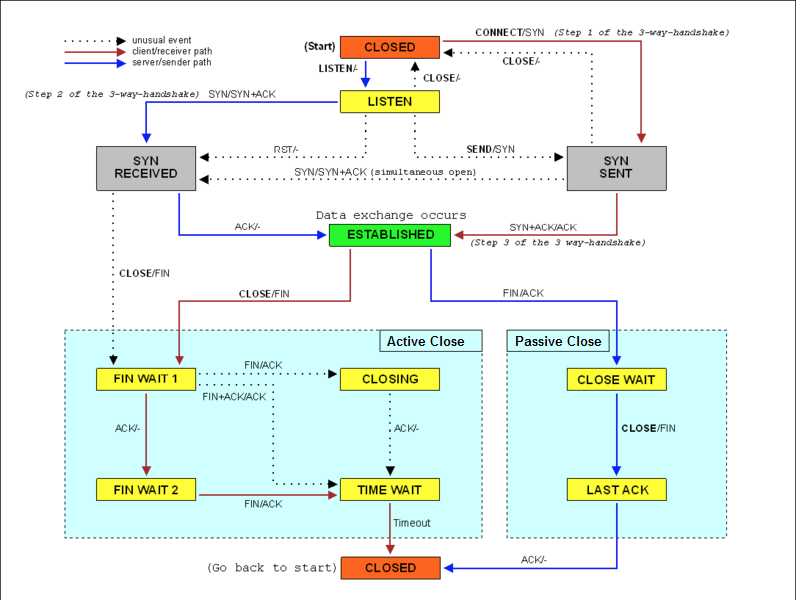

- 00 开篇词 别再让Linux性能问题成为你的绊脚石.md.html
- 01 如何学习Linux性能优化？.md.html
- 02 基础篇：到底应该怎么理解“平均负载”？.md.html
- 03 基础篇：经常说的 CPU 上下文切换是什么意思？（上）.md.html
- 04 基础篇：经常说的 CPU 上下文切换是什么意思？（下）.md.html
- 05 基础篇：某个应用的CPU使用率居然达到100%，我该怎么办？.md.html
- 06 案例篇：系统的 CPU 使用率很高，但为啥却找不到高 CPU 的应用？.md.html
- 07 案例篇：系统中出现大量不可中断进程和僵尸进程怎么办？（上）.md.html
- 08 案例篇：系统中出现大量不可中断进程和僵尸进程怎么办？（下）.md.html
- 09 基础篇：怎么理解Linux软中断？.md.html
- 10 案例篇：系统的软中断CPU使用率升高，我该怎么办？.md.html
- 11 套路篇：如何迅速分析出系统CPU的瓶颈在哪里？.md.html
- 12 套路篇：CPU 性能优化的几个思路.md.html
- 13 答疑（一）：无法模拟出 RES 中断的问题，怎么办？.md.html
- 14 答疑（二）：如何用perf工具分析Java程序？.md.html
- 15 基础篇：Linux内存是怎么工作的？.md.html
- 16 基础篇：怎么理解内存中的Buffer和Cache？.md.html
- 17 案例篇：如何利用系统缓存优化程序的运行效率？.md.html
- 18 案例篇：内存泄漏了，我该如何定位和处理？.md.html
- 19 案例篇：为什么系统的Swap变高了（上）.md.html
- 20 案例篇：为什么系统的Swap变高了？（下）.md.html
- 21 套路篇：如何“快准狠”找到系统内存的问题？.md.html
- 22 答疑（三）：文件系统与磁盘的区别是什么？.md.html
- 23 基础篇：Linux 文件系统是怎么工作的？.md.html
- 24 基础篇：Linux 磁盘I_O是怎么工作的（上）.md.html
- 25 基础篇：Linux 磁盘I_O是怎么工作的（下）.md.html
- 26 案例篇：如何找出狂打日志的“内鬼”？.md.html
- 27 案例篇：为什么我的磁盘I_O延迟很高？.md.html
- 28 案例篇：一个SQL查询要15秒，这是怎么回事？.md.html
- 29 案例篇：Redis响应严重延迟，如何解决？.md.html
- 30 套路篇：如何迅速分析出系统I_O的瓶颈在哪里？.md.html
- 31 套路篇：磁盘 I_O 性能优化的几个思路.md.html
- 32 答疑（四）：阻塞、非阻塞 I_O 与同步、异步 I_O 的区别和联系.md.html
- 33 关于 Linux 网络，你必须知道这些（上）.md.html
- 34 关于 Linux 网络，你必须知道这些（下）.md.html
- 35 基础篇：C10K 和 C1000K 回顾.md.html
- 36 套路篇：怎么评估系统的网络性能？.md.html
- 37 案例篇：DNS 解析时快时慢，我该怎么办？.md.html
- 38 案例篇：怎么使用 tcpdump 和 Wireshark 分析网络流量？.md.html
- 39 案例篇：怎么缓解 DDoS 攻击带来的性能下降问题？.md.html
- 40 案例篇：网络请求延迟变大了，我该怎么办？.md.html
- 41 案例篇：如何优化 NAT 性能？（上）.md.html
- 42 案例篇：如何优化 NAT 性能？（下）.md.html
- 43 套路篇：网络性能优化的几个思路（上）.md.html
- 44 套路篇：网络性能优化的几个思路（下）.md.html
- 45 答疑（五）：网络收发过程中，缓冲区位置在哪里？.md.html
- 46 案例篇：为什么应用容器化后，启动慢了很多？.md.html
- 47 案例篇：服务器总是时不时丢包，我该怎么办？（上）.md.html
- 48 案例篇：服务器总是时不时丢包，我该怎么办？（下）.md.html
- 49 案例篇：内核线程 CPU 利用率太高，我该怎么办？.md.html
- 50 案例篇：动态追踪怎么用？（上）.md.html
- 51 案例篇：动态追踪怎么用？（下）.md.html
- 52 案例篇：服务吞吐量下降很厉害，怎么分析？.md.html
- 53 套路篇：系统监控的综合思路.md.html
- 54 套路篇：应用监控的一般思路.md.html
- 55 套路篇：分析性能问题的一般步骤.md.html
- 56 套路篇：优化性能问题的一般方法.md.html
- 57 套路篇：Linux 性能工具速查.md.html
- 58 答疑（六）：容器冷启动如何性能分析？.md.html
- 加餐（一） 书单推荐：性能优化和Linux 系统原理.md.html
- 加餐（二） 书单推荐：网络原理和 Linux 内核实现.md.html
- 用户故事 “半路出家 ”，也要顺利拿下性能优化！.md.html
- 用户故事 运维和开发工程师们怎么说？.md.html
- 结束语 愿你攻克性能难关.md.html
- 捐赠
39 案例篇：怎么缓解 DDoS 攻击带来的性能下降问题？
你好，我是倪朋飞。
上一节，我带你学习了tcpdump 和 Wireshark 的使用方法，并通过几个案例，带你用这两个工具实际分析了网络的收发过程。碰到网络性能问题，不要忘记可以用 tcpdump 和 Wireshark 这两个大杀器，抓取实际传输的网络包，排查潜在的性能问题。
今天，我们一起来看另外一个问题，怎么缓解 DDoS（Distributed Denial of Service）带来的性能下降问题。
DDoS 简介
DDoS 的前身是 DoS（Denail of Service），即拒绝服务攻击，指利用大量的合理请求，来占用过多的目标资源，从而使目标服务无法响应正常请求。
DDoS（Distributed Denial of Service） 则是在 DoS 的基础上，采用了分布式架构，利用多台主机同时攻击目标主机。这样，即使目标服务部署了网络防御设备，面对大量网络请求时，还是无力应对。
比如，目前已知的最大流量攻击，正是去年 Github 遭受的 DDoS 攻击，其峰值流量已经达到了 1.35Tbps，PPS 更是超过了 1.2 亿（126.9 million）。
从攻击的原理上来看，DDoS 可以分为下面几种类型。
第一种，耗尽带宽。无论是服务器还是路由器、交换机等网络设备，带宽都有固定的上限。带宽耗尽后，就会发生网络拥堵，从而无法传输其他正常的网络报文。
第二种，耗尽操作系统的资源。网络服务的正常运行，都需要一定的系统资源，像是CPU、内存等物理资源，以及连接表等软件资源。一旦资源耗尽，系统就不能处理其他正常的网络连接。
第三种，消耗应用程序的运行资源。应用程序的运行，通常还需要跟其他的资源或系统交互。如果应用程序一直忙于处理无效请求，也会导致正常请求的处理变慢，甚至得不到响应。
比如，构造大量不同的域名来攻击 DNS 服务器，就会导致 DNS 服务器不停执行迭代查询，并更新缓存。这会极大地消耗 DNS 服务器的资源，使 DNS 的响应变慢。
无论是哪一种类型的 DDoS，危害都是巨大的。那么，如何可以发现系统遭受了 DDoS 攻击，又该如何应对这种攻击呢？接下来，我们就通过一个案例，一起来看看这些问题。
案例准备
下面的案例仍然基于 Ubuntu 18.04，同样适用于其他的 Linux 系统。我使用的案例环境是这样的：
机器配置：2 CPU，8GB 内存。
预先安装 docker、sar 、hping3、tcpdump、curl 等工具，比如 apt-get install docker.io hping3 tcpdump curl。
这些工具你应该都比较熟悉了。其中，hping3 在 系统的软中断CPU使用率升高案例 中曾经介绍过，它可以构造 TCP/IP 协议数据包，对系统进行安全审计、防火墙测试、DoS 攻击测试等。
本次案例用到三台虚拟机，我画了一张图来表示它们之间的关系。
你可以看到，其中一台虚拟机运行 Nginx ，用来模拟待分析的 Web 服务器；而另外两台作为 Web 服务器的客户端，其中一台用作 DoS 攻击，而另一台则是正常的客户端。使用多台虚拟机的目的，自然还是为了相互隔离，避免“交叉感染”。
由于案例只使用了一台机器作为攻击源，所以这里的攻击，实际上还是传统的 DoS ，而非 DDoS。
接下来，我们打开三个终端，分别 SSH 登录到三台机器上（下面的步骤，都假设终端编号与图示VM 编号一致），并安装上面提到的这些工具。
同以前的案例一样，下面的所有命令，都默认以 root 用户运行。如果你是用普通用户身份登陆系统，请运行 sudo su root 命令切换到 root 用户。
接下来，我们就进入到案例操作环节。
案例分析
首先，在终端一中，执行下面的命令运行案例，也就是启动一个最基本的 Nginx 应用：
# 运行Nginx服务并对外开放80端口
# --network=host表示使用主机网络（这是为了方便后面排查问题）
$ docker run -itd --name=nginx --network=host nginx
然后，在终端二和终端三中，使用 curl 访问 Nginx 监听的端口，确认 Nginx 正常启动。假设 192.168.0.30 是 Nginx 所在虚拟机的 IP 地址，那么运行 curl 命令后，你应该会看到下面这个输出界面：
# -w表示只输出HTTP状态码及总时间，-o表示将响应重定向到/dev/null
$ curl -s -w 'Http code: %{http_code}\nTotal time:%{time_total}s\n' -o /dev/null http://192.168.0.30/
...
Http code: 200
Total time:0.002s
从这里可以看到，正常情况下，我们访问 Nginx 只需要 2ms（0.002s）。
接着，在终端二中，运行 hping3 命令，来模拟 DoS 攻击：
# -S参数表示设置TCP协议的SYN（同步序列号），-p表示目的端口为80
# -i u10表示每隔10微秒发送一个网络帧
$ hping3 -S -p 80 -i u10 192.168.0.30
现在，再回到终端一，你就会发现，现在不管执行什么命令，都慢了很多。不过，在实践时要注意：
如果你的现象不那么明显，那么请尝试把参数里面的 u10 调小（比如调成 u1），或者加上–flood选项；
如果你的终端一完全没有响应了，那么请适当调大 u10（比如调成 u30），否则后面就不能通过 SSH 操作 VM1。
然后，到终端三中，执行下面的命令，模拟正常客户端的连接：
# --connect-timeout表示连接超时时间
$ curl -w 'Http code: %{http_code}\nTotal time:%{time_total}s\n' -o /dev/null --connect-timeout 10 http://192.168.0.30
...
Http code: 000
Total time:10.001s
curl: (28) Connection timed out after 10000 milliseconds
你可以发现，在终端三中，正常客户端的连接超时了，并没有收到 Nginx 服务的响应。
这是发生了什么问题呢？我们再回到终端一中，检查网络状况。你应该还记得我们多次用过的 sar，它既可以观察 PPS（每秒收发的报文数），还可以观察 BPS（每秒收发的字节数）。
我们可以回到终端一中，执行下面的命令：
$ sar -n DEV 1
08:55:49 IFACE rxpck/s txpck/s rxkB/s txkB/s rxcmp/s txcmp/s rxmcst/s %ifutil
08:55:50 docker0 0.00 0.00 0.00 0.00 0.00 0.00 0.00 0.00
08:55:50 eth0 22274.00 629.00 1174.64 37.78 0.00 0.00 0.00 0.02
08:55:50 lo 0.00 0.00 0.00 0.00 0.00 0.00 0.00 0.00
关于 sar 输出中的各列含义，我在前面的 Linux 网络基础中已经介绍过，你可以点击 这里 查看，或者执行 man sar 查询手册。
从这次 sar 的输出中，你可以看到，网络接收的 PPS 已经达到了 20000 多，但是 BPS 却只有 1174 kB，这样每个包的大小就只有 54B（1174*1024⁄22274=54）。
这明显就是个小包了，不过具体是个什么样的包呢？那我们就用 tcpdump 抓包看看吧。
在终端一中，执行下面的 tcpdump 命令：
# -i eth0 只抓取eth0网卡，-n不解析协议名和主机名
# tcp port 80表示只抓取tcp协议并且端口号为80的网络帧
$ tcpdump -i eth0 -n tcp port 80
09:15:48.287047 IP 192.168.0.2.27095 > 192.168.0.30: Flags [S], seq 1288268370, win 512, length 0
09:15:48.287050 IP 192.168.0.2.27131 > 192.168.0.30: Flags [S], seq 2084255254, win 512, length 0
09:15:48.287052 IP 192.168.0.2.27116 > 192.168.0.30: Flags [S], seq 677393791, win 512, length 0
09:15:48.287055 IP 192.168.0.2.27141 > 192.168.0.30: Flags [S], seq 1276451587, win 512, length 0
09:15:48.287068 IP 192.168.0.2.27154 > 192.168.0.30: Flags [S], seq 1851495339, win 512, length 0
...
这个输出中，Flags [S] 表示这是一个 SYN 包。大量的 SYN 包表明，这是一个 SYN Flood 攻击。如果你用上一节讲过的 Wireshark 来观察，则可以更直观地看到 SYN Flood 的过程：
实际上，SYN Flood 正是互联网中最经典的 DDoS 攻击方式。从上面这个图，你也可以看到它的原理：
即客户端构造大量的 SYN 包，请求建立 TCP 连接；
而服务器收到包后，会向源 IP 发送 SYN+ACK 报文，并等待三次握手的最后一次ACK报文，直到超时。
这种等待状态的 TCP 连接，通常也称为半开连接。由于连接表的大小有限，大量的半开连接就会导致连接表迅速占满，从而无法建立新的 TCP 连接。
参考下面这张 TCP 状态图，你能看到，此时，服务器端的 TCP 连接，会处于 SYN_RECEIVED 状态：

（图片来自 Wikipedia）
这其实提示了我们，查看 TCP 半开连接的方法，关键在于 SYN_RECEIVED 状态的连接。我们可以使用 netstat ，来查看所有连接的状态，不过要注意，SYN_REVEIVED 的状态，通常被缩写为 SYN_RECV。
我们继续在终端一中，执行下面的 netstat 命令：
# -n表示不解析名字，-p表示显示连接所属进程
$ netstat -n -p | grep SYN_REC
tcp 0 0 192.168.0.30:80 192.168.0.2:12503 SYN_RECV -
tcp 0 0 192.168.0.30:80 192.168.0.2:13502 SYN_RECV -
tcp 0 0 192.168.0.30:80 192.168.0.2:15256 SYN_RECV -
tcp 0 0 192.168.0.30:80 192.168.0.2:18117 SYN_RECV -
...
从结果中，你可以发现大量 SYN_RECV 状态的连接，并且源IP地址为 192.168.0.2。
进一步，我们还可以通过 wc 工具，来统计所有 SYN_RECV 状态的连接数：
$ netstat -n -p | grep SYN_REC | wc -l
193
找出源 IP 后，要解决 SYN 攻击的问题，只要丢掉相关的包就可以。这时，iptables 可以帮你完成这个任务。你可以在终端一中，执行下面的 iptables 命令：
$ iptables -I INPUT -s 192.168.0.2 -p tcp -j REJECT
然后回到终端三中，再次执行 curl 命令，查看正常用户访问 Nginx 的情况：
$ curl -w 'Http code: %{http_code}\nTotal time:%{time_total}s\n' -o /dev/null --connect-timeout 10 http://192.168.0.30
Http code: 200
Total time:1.572171s
现在，你可以发现，正常用户也可以访问 Nginx 了，只是响应比较慢，从原来的 2ms 变成了现在的 1.5s。
不过，一般来说，SYN Flood 攻击中的源 IP 并不是固定的。比如，你可以在 hping3 命令中，加入 –rand-source 选项，来随机化源 IP。不过，这时，刚才的方法就不适用了。
幸好，我们还有很多其他方法，实现类似的目标。比如，你可以用以下两种方法，来限制 syn 包的速率：
# 限制syn并发数为每秒1次
$ iptables -A INPUT -p tcp --syn -m limit --limit 1/s -j ACCEPT
# 限制单个IP在60秒新建立的连接数为10
$ iptables -I INPUT -p tcp --dport 80 --syn -m recent --name SYN_FLOOD --update --seconds 60 --hitcount 10 -j REJECT
到这里，我们已经初步限制了 SYN Flood 攻击。不过这还不够，因为我们的案例还只是单个的攻击源。
如果是多台机器同时发送 SYN Flood，这种方法可能就直接无效了。因为你很可能无法 SSH 登录（SSH 也是基于 TCP 的）到机器上去，更别提执行上述所有的排查命令。
所以，这还需要你事先对系统做一些 TCP 优化。
比如，SYN Flood 会导致 SYN_RECV 状态的连接急剧增大。在上面的 netstat 命令中，你也可以看到 190 多个处于半开状态的连接。
不过，半开状态的连接数是有限制的，执行下面的命令，你就可以看到，默认的半连接容量只有 256：
$ sysctl net.ipv4.tcp_max_syn_backlog
net.ipv4.tcp_max_syn_backlog = 256
换句话说， SYN 包数再稍微增大一些，就不能 SSH 登录机器了。 所以，你还应该增大半连接的容量，比如，你可以用下面的命令，将其增大为 1024：
$ sysctl -w net.ipv4.tcp_max_syn_backlog=1024
net.ipv4.tcp_max_syn_backlog = 1024
另外，连接每个 SYN_RECV 时，如果失败的话，内核还会自动重试，并且默认的重试次数是5次。你可以执行下面的命令，将其减小为 1 次：
$ sysctl -w net.ipv4.tcp_synack_retries=1
net.ipv4.tcp_synack_retries = 1
除此之外，TCP SYN Cookies 也是一种专门防御 SYN Flood 攻击的方法。SYN Cookies 基于连接信息（包括源地址、源端口、目的地址、目的端口等）以及一个加密种子（如系统启动时间），计算出一个哈希值（SHA1），这个哈希值称为 cookie。
然后，这个 cookie 就被用作序列号，来应答 SYN+ACK 包，并释放连接状态。当客户端发送完三次握手的最后一次 ACK 后，服务器就会再次计算这个哈希值，确认是上次返回的 SYN+ACK 的返回包，才会进入 TCP 的连接状态。
因而，开启 SYN Cookies 后，就不需要维护半开连接状态了，进而也就没有了半连接数的限制。
注意，开启 TCP syncookies 后，内核选项 net.ipv4.tcp_max_syn_backlog 也就无效了。
你可以通过下面的命令，开启 TCP SYN Cookies：
$ sysctl -w net.ipv4.tcp_syncookies=1
net.ipv4.tcp_syncookies = 1
注意，上述 sysctl 命令修改的配置都是临时的，重启后这些配置就会丢失。所以，为了保证配置持久化，你还应该把这些配置，写入 /etc/sysctl.conf 文件中。比如：
$ cat /etc/sysctl.conf
net.ipv4.tcp_syncookies = 1
net.ipv4.tcp_synack_retries = 1
net.ipv4.tcp_max_syn_backlog = 1024
不过要记得，写入 /etc/sysctl.conf 的配置，需要执行 sysctl -p 命令后，才会动态生效。
当然案例结束后，别忘了执行 docker rm -f nginx 命令，清理案例开始时启动的 Nginx 应用。
DDoS到底该怎么防御
到这里，今天的案例就结束了。不过，你肯定还有疑问。你应该注意到了，今天的主题是“缓解”，而不是“解决” DDoS 问题。
为什么不是解决 DDoS ，而只是缓解呢？而且今天案例中的方法，也只是让 Nginx 服务访问不再超时，但访问延迟还是比一开始时的 2ms 大得多。
实际上，当 DDoS 报文到达服务器后，Linux 提供的机制只能缓解，而无法彻底解决。即使像是 SYN Flood 这样的小包攻击，其巨大的 PPS ，也会导致 Linux 内核消耗大量资源，进而导致其他网络报文的处理缓慢。
虽然你可以调整内核参数，缓解 DDoS 带来的性能问题，却也会像案例这样，无法彻底解决它。
在之前的 C10K、C100K 文章 中，我也提到过，Linux 内核中冗长的协议栈，在 PPS 很大时，就是一个巨大的负担。对 DDoS 攻击来说，也是一样的道理。
所以，当时提到的 C10M 的方法，用到这里同样适合。比如，你可以基于 XDP 或者 DPDK，构建 DDoS 方案，在内核网络协议栈前，或者跳过内核协议栈，来识别并丢弃 DDoS 报文，避免DDoS 对系统其他资源的消耗。
不过，对于流量型的 DDoS 来说，当服务器的带宽被耗尽后，在服务器内部处理就无能为力了。这时，只能在服务器外部的网络设备中，设法识别并阻断流量（当然前提是网络设备要能扛住流量攻击）。比如，购置专业的入侵检测和防御设备，配置流量清洗设备阻断恶意流量等。
既然 DDoS 这么难防御，这是不是说明， Linux 服务器内部压根儿就不关注这一点，而是全部交给专业的网络设备来处理呢？
当然不是，因为 DDoS 并不一定是因为大流量或者大 PPS，有时候，慢速的请求也会带来巨大的性能下降（这种情况称为慢速 DDoS）。
比如，很多针对应用程序的攻击，都会伪装成正常用户来请求资源。这种情况下，请求流量可能本身并不大，但响应流量却可能很大，并且应用程序内部也很可能要耗费大量资源处理。
这时，就需要应用程序考虑识别，并尽早拒绝掉这些恶意流量，比如合理利用缓存、增加 WAF（Web Application Firewall）、使用 CDN 等等。
小结
今天，我们学习了分布式拒绝服务（DDoS）时的缓解方法。DDoS 利用大量的伪造请求，使目标服务耗费大量资源，来处理这些无效请求，进而无法正常响应正常的用户请求。
由于 DDoS 的分布式、大流量、难追踪等特点，目前还没有方法可以完全防御 DDoS 带来的问题，只能设法缓解这个影响。
比如，你可以购买专业的流量清洗设备和网络防火墙，在网络入口处阻断恶意流量，只保留正常流量进入数据中心的服务器中。
在 Linux 服务器中，你可以通过内核调优、DPDK、XDP 等多种方法，来增大服务器的抗攻击能力，降低 DDoS 对正常服务的影响。而在应用程序中，你可以利用各级缓存、 WAF、CDN 等方式，缓解 DDoS 对应用程序的影响。
思考
最后给你留一个思考题。
看到今天的案例，你可能会觉得眼熟。实际上，它正是在 系统的软中断CPU使用率升高案例 基础上扩展而来的。当时，我们是从软中断 CPU 使用率的角度来分析的，也就是说，DDoS 会导致软中断 CPU 使用率（softirq）升高。
回想一下当时的案例和分析思路，再结合今天的案例，你觉得还有没有更好的方法，来检测 DDoS 攻击呢？除了 tcpdump，还有哪些方法查找这些攻击的源地址？
欢迎在留言区和我讨论，也欢迎把这篇文章分享给你的同事、朋友。我们一起在实战中演练，在交流中进步。
© 2019 - 2023 Liangliang Lee. Powered by gin and hexo-theme-book.